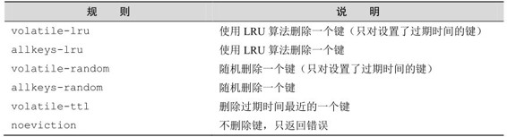

4.2 过期时间
转天早上宋老师就收到了小白的回信，内容基本上都是一些表示感谢的话。宋老师又看了一下小白发的那篇文章，发现他已经在文末补充了使用事务来解决竞态条件的方法。
宋老师单击了评论链接想发表评论，却看到博客出现了错误“请求超时”（Request timeout）。宋老师疑惑了一下，准备稍后再访问看看，就接着忙别的事情了。
没过一会儿，宋老师就收到了一封小白发来的邮件：
宋老师您好！我的博客最近经常无法访问，我看了日志后发现是因为某个搜索引擎爬虫访问得太频繁，加上本来我的服务器性能就不太好，很容易资源就被占满了。请问有没有方法可以限定每个IP地址每分钟最大的访问次数呢？
宋老师这才明白为什么刚才小白的博客请求超时了，于是放下了手头的事情开始继续给小白介绍Redis的更多功能„„
在实际的开发中经常会遇到一些有时效的数据，比如限时优惠活动、缓存或验证码等，过了一定的时间就需要删除这些数据。在关系数据库中一般需要额外的一个字段记录到期时间，然后定期检测删除过期数据。而在Redis中可以使用 EXPIRE命令设置一个键的过期时间，到时间后Redis会自动删除它。
EXPIRE 命令的使用方法为 EXPIRE key seconds，其中 seconds 参数表示键的过期时间，单位是秒。如要想让session:29e3d键在15分钟后被删除：
redis> SET session:29e3d uid1314
OK
redis> EXPIRE session:29e3d 900
(integer) 1
EXPIRE命令返回1表示设置成功，返回0则表示键不存在或设置失败。例如：
redis> DEL session:29e3d
(integer) 1
redis> EXPIRE session:29e3d 900
(integer) 0
如果想知道一个键还有多久的时间会被删除，可以使用TTL命令。返回值是键的剩余时间（单位是秒）：
redis> SET foo bar
OK
redis> EXPIRE foo 20
(integer) 1
redis> TTL foo
(integer) 15
redis> TTL foo
(integer) 7
redis> TTL foo
(integer) –2
可见随着时间的不同，foo键的过期时间逐渐减少，20秒后foo键会被删除。当键不存在时TTL命令会返回−2。
那么没有为键设置过期时间（即永久存在，这是建立一个键后的默认情况）的情况下会返回什么呢？答案是返回−1：
redis> SET persistKey value
OK
redis> TTL persistKey
版本差异 在2.6版中，无论键不存在还是键没有过期时间都会返回−1，直到2.8版后两种情况才会分别返回−2和−1两种结果。
(integer) –1
如果想取消键的过期时间设置（即将键恢复成永久的），则可以使用PERSIST命令。如果过期时间被成功清除则返回1；否则返回0（因为键不存在或键本来就是永久的）：
redis> SET foo bar
OK
redis> EXPIRE foo 20
(integer) 1
redis> PERSIST foo
(integer) 1
redis> TTL foo
(integer) –1
除了PERSIST命令之外，使用SET或GETSET命令为键赋值也会同时清除键的过期时间，例如：
redis> EXPIRE foo 20
(integer) 1
redis> SET foo bar
OK
redis> TTL foo
(integer) –1
使用EXPIRE命令会重新设置键的过期时间，就像这样：
redis> SET foo bar
OK
redis> EXPIRE foo 20
(integer) 1
redis> TTL foo
(integer) 15
redis> EXPIRE foo 20
(integer) 1
redis> TTL foo
(integer) 17
其他只对键值进行操作的命令（如INCR、LPUSH、HSET、ZREM）均不会影响键的过期时间。
EXPIRE命令的seconds参数必须是整数，所以最小单位是1秒。如果想要更精确的控制键的过期时间应该使用 PEXPIRE命令，PEXPIRE命令与 EXPIRE的唯一区别是前者的时间单位是毫秒，即 PEXPIRE key 1000 与 EXPIRE key 1 等价。对应地可以用 PTTL命令以毫秒为单位返回键的剩余时间。
提示 如果使用 WATCH命令监测了一个拥有过期时间的键，该键时间到期自动删除并不会被WATCH命令认为该键被改变。
另外还有两个相对不太常用的命令：EXPIREAT和PEXPIREAT。
EXPIREAT命令与EXPIRE命令的差别在于前者使用Unix时间作为第二个参数表示键的过期时刻。PEXPIREAT命令与EXPIREAT命令的区别是前者的时间单位是毫秒。如：
redis> SET foo bar
OK
redis> EXPIREAT foo 1351858600
(integer) 1
redis> TTL foo
(integer) 142
redis> PEXPIREAT foo 1351858700000
(integer) 1
回到小白的问题，为了减轻服务器的压力，需要限制每个用户（以IP计）一段时间的最大访问量。与时间有关的操作很容易想到EXPIRE命令。
例如要限制每分钟每个用户最多只能访问100个页面，思路是对每个用户使用一个名为 rate.limiting:用户 IP的字符串类型键，每次用户访问则使用 INCR命令递增该键的键值，如果递增后的值是1（第一次访问页面），则同时还要设置该键的过期时间为1分钟。这样每次用户访问页面时都读取该键的键值，如果超过了100就表明该用户的访问频率超过了限制，需要提示用户稍后访问。该键每分钟会自动被删除，所以下一分钟用户的访问次数又会重新计算，也就达到了限制访问频率的目的。
上述流程的伪代码如下：
$isKeyExists = EXISTS rate.limiting:$IP
if $isKeyExists is 1
$times = INCR rate.limiting:$IP
if $times > 100
print 访问频率超过了限制，请稍后再试。
exit
else
INCR rate.limiting:$IP
EXPIRE $keyName, 60
这段代码存在一个不太明显的问题：假如程序执行完倒数第二行后突然因为某种原因退出了，没能够为该键设置过期时间，那么该键会永久存在，导致使用对应的IP的用户在管理员手动删除该键前最多只能访问100次博客，这是一个很严重的问题。
为了保证建立键和为键设置过期时间一起执行，可以使用上节学习的事务功能，修改后的代码如下：
$isKeyExists = EXISTS rate.limiting:$IP
if $isKeyExists is 1
$times = INCR rate.limiting:$IP
if $times > 100
print 访问频率超过了限制，请稍后再试。
exit
else
MULTI
INCR rate.limiting:$IP
EXPIRE $keyName, 60
EXEC
事实上，4.2.2节中的代码仍然有个问题：如果一个用户在一分钟的第一秒访问了一次博客，在同一分钟的最后一秒访问了9次，又在下一分钟的第一秒访问了10次，这样的访问是可以通过现在的访问频率限制的，但实际上该用户在2秒内访问了19次博客，这与每个用户每分钟只能访问10次的限制差距较大。尽管这种情况比较极端，但是在一些场合中还是需要粒度更小的控制方案。如果要精确地保证每分钟最多访问10次，需要记录下用户每次访问的时间。因此对每个用户，我们使用一个列表类型的键来记录他最近10次访问博客的时间。一旦键中的元素超过 10 个，就判断时间最早的元素距现在的时间是否小于 1分钟。如果是则表示用户最近1分钟的访问次数超过了10次；如果不是就将现在的时间加入到列表中，同时把最早的元素删除。
上述流程的伪代码如下：
$listLength = LLEN rate.limiting:$IP
if $listLength < 10
LPUSH rate.limiting:$IP, now()
else
$time = LINDEX rate.limiting:$IP, -1
if now() - $time < 60
print 访问频率超过了限制，请稍后再试。
else
LPUSH rate.limiting:$IP, now()
LTRIM rate.limiting:$IP, 0, 9
代码中 now()的功能是获得当前的 Unix 时间。由于需要记录每次访问的时间，所以当要限制“A时间最多访问B次”时，如果“B”的数值较大，此方法会占用较多的存储空间，实际使用时还需要开发者自己去权衡。除此之外该方法也会出现竞态条件，同样可以通过脚本功能避免，具体在第6章会介绍到。
为了提高网站的负载能力，常常需要将一些访问频率较高但是对CPU或IO资源消耗较大的操作的结果缓存起来，并希望让这些缓存过一段时间自动过期。比如教务网站要对全校所有学生的各个科目的成绩汇总排名，并在首页上显示前10名的学生姓名，由于计算过程较耗资源，所以可以将结果使用一个 Redis 的字符串键缓存起来。由于学生成绩总在不断地变化，需要每隔两个小时就重新计算一次排名，这可以通过给键设置过期时间的方式实现。每次用户访问首页时程序先查询缓存键是否存在，如果存在则直接使用缓存的值；否则重新计算排名并将计算结果赋值给该键并同时设置该键的过期时间为两个小时。伪代码如下：
$rank = GET cache:rank
if not $rank
$rank = 计算排名...
MUlTI
SET cache:rank, $rank
EXPIRE cache:rank, 7200
EXEC
然而在一些场合中这种方法并不能满足需要。当服务器内存有限时，如果大量地使用缓存键且过期时间设置得过长就会导致 Redis 占满内存；另一方面如果为了防止 Redis 占用内存过大而将缓存键的过期时间设得太短，就可能导致缓存命中率过低并且大量内存白白地闲置。实际开发中会发现很难为缓存键设置合理的过期时间，为此可以限制 Redis 能够使用的最大内存，并让Redis按照一定的规则淘汰不需要的缓存键，这种方式在只将Redis用作缓存系统时非常实用。
具体的设置方法为：修改配置文件的maxmemory参数，限制Redis最大可用内存大小（单位是字节），当超出了这个限制时Redis会依据maxmemory-policy参数指定的策略来删除不需要的键直到Redis占用的内存小于指定内存。
maxmemory-policy支持的规则如表4-1所示。其中的LRU（Least Recently Used）算法即“最近最少使用”，其认为最近最少使用的键在未来一段时间内也不会被用到，即当需要空间时这些键是可以被删除的。
表4-1 Redis 支持的淘汰键的规则

如当maxmemory-policy设置为allkeys-lru时，一旦Redis占用的内存超过了限制值，Redis会不断地删除数据库中最近最少使用的键[2] ，直到占用的内存小于限制值。